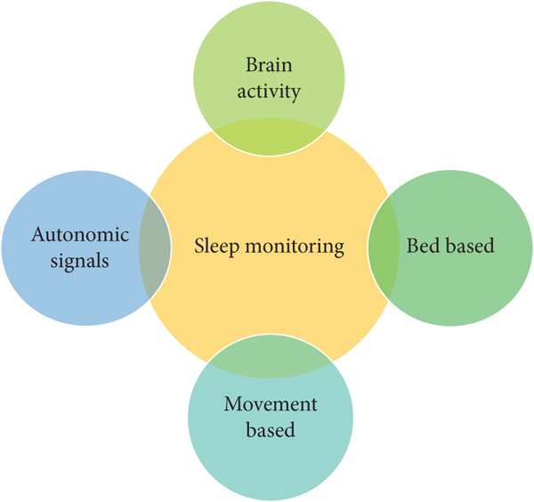
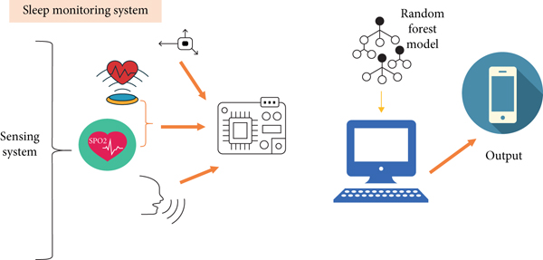
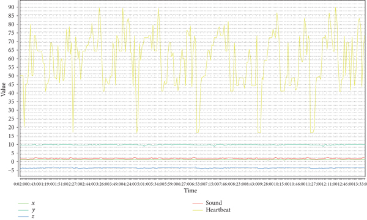

Problem Statement
Every person should get enough sleep to improve their physical health. Regular sleep monitoring is essential for a healthy body and mind since irregular sleep patterns may be a sign of a condition that leads to chronic depression.
According to the studies, not getting enough sleep (less than 7 hours each night) may have a variety of negative impacts on the neurological, endocrine, immunological, and cardiovascular systems.
- Obesity in adults and children
- Diabetes and impaired glucose tolerance
- Cardiovascular disease and hypertension
- Anxiety symptoms
- Depressed mood
- Alcohol use
Introduction
The human body cycles through two phases of sleep, (1) rapid eye movement (REM) and (2) non-rapid eye movement (NREM) sleep, which is further divided into three stages, N1-N3. Each phase and stage of sleep includes variations in muscle tone, brain wave patterns, and eye movements. The body cycles through all of these stages approximately 4 to 6 times each night, averaging 90 minutes for each cycle. This article will discuss the progression of the sleep stages and the unique features associated with each.
The market has a variety of instruments for tracking sleep patterns that take into account these three elements. We may divide current research on modern sleep monitoring technology into four areas.
In this project, a personal computer will be used as an alternative to carry out intricate processing and analysis to gauge patients' sleep quality. An ARDUINO controller and commercially available sensors make up the suggested sleep monitoring system. During sleep, this system keeps track of the patient's environment and movement. The major goal of this study is to suggest a cost-effective sleep monitoring device for patients in homes or hospitals that can perform monitoring over more than one day or night. The sensors used in the proposed system are readily available on the market.
The proposed approach has the following key features.
- This approach uses three sensors: an accelerometer, microphone and a pulse oximeter
- This approach is low cost as it uses very cheap and easily available sensors for monitoring sleep
- The proposed system is intelligent enough that it works accurately with a minimum error rate
A clever and intelligent sleep monitoring system that tracks the patient's vital signs like heartbeat, oxygen saturation, body movement, and snoring patterns has been proposed in this study. The suggested approaches categorise vital indicators into various classifications of sleep quality by identifying changes in them. Comparing the proposed system to other devices and systems, it is cost- and result-effective.
Design of Proposed System
The proposed system is intelligent and perceptive enough to have been employed in the evaluation of a person's sleep. With the help of this method, it is possible to tell when a person is sleeping comfortably and when he is not. Using patient real-time data, we can suggest a way to determine whether or not a person had a restful night's sleep. Sensors record patient ambient data, which is then transmitted to a computer system for storage and analysis. The data is then analysed using an algorithm known as the random forest. The data is intelligently divided into five groups by this programme. "Peaceful, very peaceful, medium, un-peaceful, and very un-peaceful" are these classifications. "Peaceful" refers to a patient who is soundly dozing. "Very peaceful" indicates that the patient is having a very peaceful night's sleep. The patient is sleeping normally if they fall within the "Medium" group. The "Un-peaceful" category denotes a patient who is not at peace while they are asleep. The patient's extremely restless sleep is indicated by the "Very un-peaceful" category.
The suggested system utilises external sensors that communicate with a microcontroller in order to function. The first layer of this three-layer architecture is the conveyance of data from the sensors to the Arduino microcontroller. The second phase is sending this information to the computer system via the Arduino microcontroller. Data is kept in the file and used for the classifier's testing and training, which is done using this data. The patient's data is then gathered in a real-time context, and the system provides information on the patient's sleep quality.
Hardwares Used
- Accelerometer : ADXL345
- Heart rate sensor : MAX30100
- Microphone : MAX9814
How it works
The introduced patient’s sleep quality monitoring system includes patients’ ambient parameter monitor. These parameters include heart rate, SPO2, body movement, and snoring patterns of the patient. All sensors are connected to the Arduino controller. The sensors are as follows:
- Triple axis accelerometer
- Pulse sensor
- Microphone amplifier
The patient's data is collected on several sleep-related days and nights, and the model uses the results to predict whether the patient will have a peaceful night's sleep or not. Additionally, it determines how peaceful and unpeaceful a patient's nighttime sleep was.
Results and Discussion
The accelerometer and pulse oximeter get the right measurements and communicate the information to Arduino. The data is stored in this microcontroller, which also connects with the server. The server computer displayed the results.
This economical method of sleep monitoring uses an intellectual system coupled with current, low-cost technologies. This system employs the random forest classification technique for making intelligent decisions. We have taken into consideration how the suggested sleep quality monitoring system would be implemented in detail with all hardware descriptions. We have now used the sensors in the system testing process (accelerometer, heartbeat oximeter, and microphone amplifier).
Accelerometer data consist of x-, y-, and z-axis. These axis values provide direction for the patient’s movement during sleep. This data is collected while the patient is sleeping. A higher difference between these values shows that patient is moving too much during sleep and does not have peaceful night. Sound data provide a sound level of the patient during sleep. This data is collected during the day and night to observe the sleep pattern of patients.
Conclusion
In this research, the suggested system used a variety of low-cost, user-friendly sensors to monitor the patient's sleep patterns. These sensors consist of a microphone amplifier, an accelerometer, and a pulse oximeter. This data was communicated by Arduino to the server for analysis, producing excellent results at a low cost. The microcontroller was used to control these sensors.
The following issues could also be highlighted for research in the future:
- Wireless sensors and microcontrollers can be used for a portable patient's sleep quality monitoring device.
- For the system to operate independently and display results on a mobile app, Raspberry Pie can be used in place of Arduino.
The suggested system utilises external sensors that communicate with a microcontroller in order to function. The first layer of this three-layer architecture is the conveyance of data from the sensors to the Arduino microcontroller. The second phase is sending this information to the computer system via the Arduino microcontroller. Data is kept in the file and used for the classifier's testing and training, which is done using this data. The patient's data is then gathered in a real-time context, and the system provides information on the patient's sleep quality.